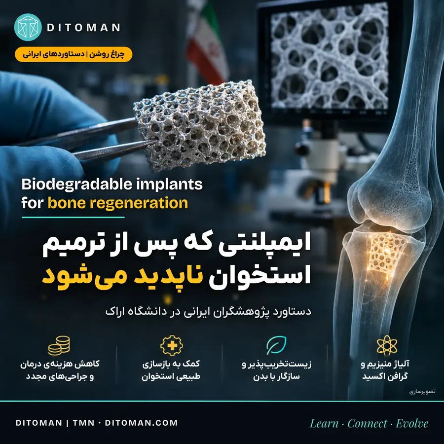
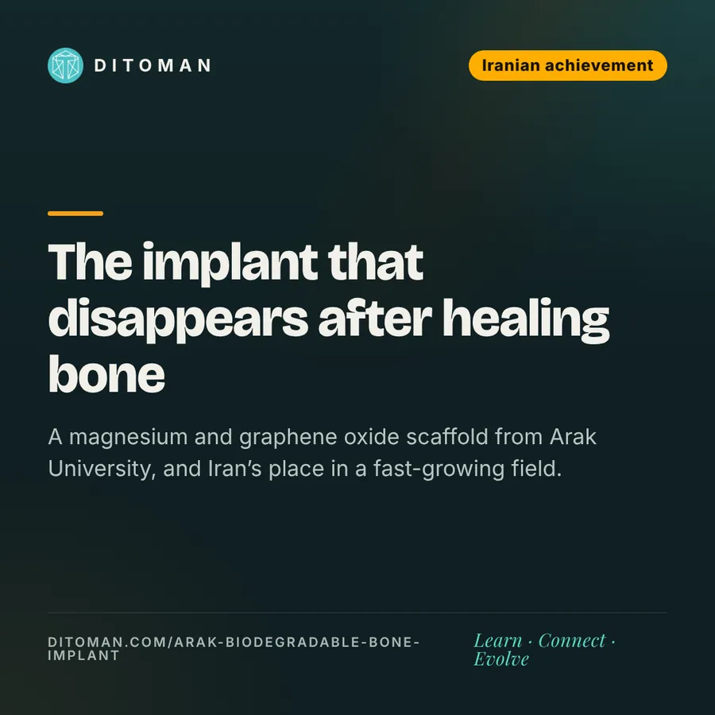

ایمپلنتی که پس از ترمیم استخوان ناپدید میشود؛ دستاورد پژوهشگران دانشگاه اراک
The implant that disappears after healing bone: a breakthrough from Arak University
داربست منیزیم و گرافن اکسید؛ نتایج آزمایشگاهی، جایگاه ایران و دنیا، ارزش اقتصادی و راه تا اتاق عمل
A magnesium and graphene oxide scaffold: lab results, Iran and the world, economic value and the road to the operating room
پژوهشگران دانشگاه اراک داربستی استخوانی از آلیاژ منیزیم و گرافن اکسید ساختهاند که برای ترمیم استخوان طراحی شده و قرار است پس از انجام کارش، کمکم در بدن حل شود. مقالهی آن در نشریهی بینالمللی Results in Engineering (الزویر) منتشر شده است. این گزارش میگوید دقیقاً چه ساخته شده، دنیا کجاست، ایران کجاست، ارزش اقتصادیاش چقدر میتواند باشد و تا اتاق عمل چه راهی مانده.
1. خبر چیست؟
| عنوان مقاله | داربستهای یکجهتهی ZK60-GO: استحکام، زیستتخریبپذیری، پاسخ سلولی و اثر ضدباکتریایی برای بازسازی استخوان |
|---|---|
| پژوهشگران | عباس صابری، آبتین عبادی عموقین، قاسم عیسیآبادی بوزچلوئی |
| دانشگاه | دانشگاه اراک، دانشکدهی مهندسی مواد |
| نشریه | Results in Engineering، جلد ۳۲، دسامبر ۲۰۲۶ (انتشار آنلاین ۲۶ خرداد ۱۴۰۵)، دسترسی آزاد |
| حامی مالی | صندوق حمایت از پژوهشگران و فناوران کشور (INSF)، طرح ۴۰۳۱۰۴۴ |
| مرحله | ساخت نمونه و آزمون آزمایشگاهی؛ کاربرد انسانی هنوز تأیید نشده |
این خبر را Press TV هم منعکس کرده است. اصل مقاله قابل دسترس و قابل بررسی است؛ چیزی که برای بسیاری از خبرهای «دستاورد علمی» صادق نیست.
2. چه چیزی ساخته شده؟
داربست استخوانی ساختاری متخلخل است که در محل آسیب قرار میگیرد، استخوان را موقتاً نگه میدارد و به سلولها جا میدهد تا استخوان تازه بسازند. ایدهی اصلی: داربست همزمان با رشد استخوان، کمکم حل شود.
سه جزء اصلی:
- آلیاژ منیزیم ZK60: منیزیم با روی و زیرکونیوم. منیزیم عنصری طبیعی در بدن است و سفتیاش به استخوان نزدیکتر از تیتانیوم است
- گرافن اکسید (۱٪ وزنی): مادهی نانویی که برای بهتر کردن استحکام، کند کردن خوردگی و اثر ضدباکتریایی اضافه شده
- حفرههای مهندسیشده: حفرههای دو اندازه (۲ میلیمتر و ۳۵۰ میکرون) که یکجهته در قطعه ایجاد شدهاند تا سلولها و رگها نفوذ کنند
روش ساخت: ریختهگری همزدنی آلیاژ با گرافن اکسید و سپس ایجاد حفرهها با ماشینکاری CNC روی مکعبهای ۱۰ میلیمتری.
3. نتایج آزمایشگاهی
پژوهشگران چهار نمونه را مقایسه کردهاند: یک نمونهی توپر و سه نمونه با تخلخل کم، متوسط و زیاد.
| نمونه | تخلخل کل | استحکام فشاری | نرخ خوردگی (۱۴ روز در مایع شبیهسازی بدن) |
|---|---|---|---|
| ZG0 (توپر) | ۰ | ۱۷۰ مگاپاسکال | — |
| ZG1 | ۵٪ | ۱۳۸ مگاپاسکال | ۲٫۸ میلیمتر در سال |
| ZG2 (منتخب) | ۱۳٪ | ۱۲۴ مگاپاسکال | ۲٫۶ میلیمتر در سال |
| ZG3 | ۲۲٪ | ۸۳ مگاپاسکال | ۳٫۹ میلیمتر در سال |
- مقایسه: استحکام فشاری استخوان قشری (سخت) انسان معمولاً حدود ۱۰۰ تا ۲۳۰ مگاپاسکال و استخوان اسفنجی خیلی کمتر است؛ یعنی نمونهی منتخب در محدودهی استخوان واقعی است
- ضدباکتریایی: هالهی عدم رشد باکتری در نمونهی توپر حدود ۰٫۳ تا ۰٫۴ میلیمتر بود و در نمونههای حاوی گرافن اکسید به ۴ تا ۵٫۷ میلیمتر رسید، برای هر دو باکتری E. coli و استافیلوکوک طلایی
- پاسخ سلولی: روی سلولهای استخوانی MG-63 (استاندارد ISO 10993-5)، نمونهی ZG2 بیشترین تراکم سلولی را داشت و نشانههای استخوانسازی (رسوب کلسیم و فعالیت آنزیم ALP) دیده شد
- هیدروژن: کمترین آزادسازی گاز هیدروژن، یکی از مشکلات اصلی منیزیم، در همین نمونهی ZG2 بود
احتیاط: اینها نتایج آزمایشگاهیاند. نرخ خوردگی در محلول را نمیشود مستقیماً به زمان جذب در بدن تبدیل کرد و اثر ضدباکتریایی در ظرف آزمایش به معنی پیشگیری قطعی از عفونت پس از جراحی نیست.
4. چرا این فناوری مهم است؟
در جراحی شکستگی، پیچ و صفحهی فلزی (تیتانیوم یا فولاد) استخوان را ثابت میکنند. خیلی از این قطعهها در بدن میمانند، اما بخش قابلتوجهی از بیماران به جراحی دوم برای درآوردن آنها نیاز پیدا میکنند.
- در فنلاند: از ۶۸٬۸۶۵ بیمار شکستگی مچ پا که بین ۱۹۹۷ تا ۲۰۱۶ جراحی شدند، ۲۷٪ جراحی دوم برای خارجسازی داشتند. هزینهی مستقیم هر عمل حدود ۷۹۷ یورو بود (Acta Orthopaedica، ۲۰۲۰)
- هزینهی انسانی: مطالعهای روی ۱۶۷ بیمار خارجسازی نشان داد میانگین عمل ۷۷ دقیقه بود، ۴۴٪ بیش از یک روز بستری شدند، ۳۴٪ مرخصی استعلاجی گرفتند و ۶٪ دچار عارضه شدند
ایمپلنت قابل جذب، اگر ایمنی و کاراییاش ثابت شود، این جراحی دوم را حذف میکند: یک بیهوشی کمتر، یک بستری کمتر، یک مرخصی کمتر.
5. دنیا کجاست؟
ایمپلنت منیزیمی قابل جذب اختراع تازهای نیست. چند محصول به بازار رسیدهاند:
| کشور | محصول | وضعیت |
|---|---|---|
| آلمان | پیچ MAGNEZIX (شرکت Syntellix) | نشان CE اروپا از ۲۰۱۳؛ تأیید در ۷۳ کشور و دهها هزار جراحی به گفتهی شرکت؛ تأیید چین (NMPA) در ۲۰۲۵ |
| کرهی جنوبی | پیچ K-MET (شرکت U&I) | تأیید سازمان غذا و داروی کره در ۲۰۱۵ برای تثبیت شکستگی دست |
| چین | پیچ منیزیم خالص (Dongguan Eontec) | اولین کارآزمایی بالینی ۲۰۱۳؛ مسیر «وسیلهی پزشکی نوآورانه» |
| هلند | داربست متخلخل منیزیمی چاپ سهبعدی (TU Delft) | پژوهش دانشگاهی از ۲۰۱۸ |
شواهد بالینی کلی: یک مرور نظاممند ۲۰۲۵ روی ۲۷ کارآزمایی و ۱٬۴۳۷ بیمار، نرخ کلی عوارض را در ایمپلنتهای قابل جذب ۱۵٫۵٪ و در فلزی ۱۳٫۳٪ گزارش کرده؛ تفاوت از نظر آماری معنادار نبود. یعنی ایمپلنت قابل جذب در بسیاری از کاربردها جایگزین معقولی است، اما نتیجه به جنس و محل جراحی بستگی دارد.
نکتهی مهم: محصولات بالینی امروز بیشتر پیچ و پین توپر برای استخوانهای کوچکاند (پا، دست، مچ). داربست متخلخل برای پر کردن نقص استخوان، که کار دانشگاه اراک است، یک قدم جلوتر و هنوز در مرحلهی پژوهش جهانی است.
6. جایگاه ایران در این رشته
یک تحلیل علمسنجی (Frontiers in Bioengineering، ۲۰۲۲) همهی مقالات منیزیم زیستتخریبپذیر برای ارتوپدی را از ۲۰۰۵ تا ۲۰۲۱ بررسی کرده است:
| رتبه | کشور | تعداد مقاله |
|---|---|---|
| ۱ | چین | ۸۵۵ |
| ۲ | آمریکا | ۲۶۸ |
| ۳ | آلمان | ۲۵۶ |
| ۴ | هند | ۱۲۰ |
| ۵ | ایران | ۱۰۷ |
| ۶ | استرالیا | ۸۹ |
| ۷ | کرهی جنوبی | ۸۹ |
| ۸ | ژاپن | ۵۱ |
ایران پنجمین کشور جهان در تولید علم این حوزه است؛ جلوتر از استرالیا، کره و ژاپن. مقالههای ایرانی در این بررسی بیش از ۲٬۳۰۰ بار ارجاع گرفتهاند. کار دانشگاه اراک تنها نیست: پژوهشگران دانشگاه تبریز و علوم پزشکی تبریز هم در ۲۰۲۵ داربست ترکیبی حاوی گرافن اکسید در Scientific Reports منتشر کردهاند.
فاصلهی ایران با کره و آلمان در مقاله نیست، در محصول است: آنها پژوهش را به مجوز بالینی و تولید صنعتی رساندهاند.
7. پژوهشگر: کاری چندساله، نه یکشبه
سوابق عباس صابری (ORCID) نشان میدهد او دستکم از ۲۰۲۰ روی همین مسیر کار کرده است:
- ۲۰۲۰: خوردگی و خواص زیستی کامپوزیت منیزیم و گرافن
- ۲۰۲۱: نانوکامپوزیتهای منیزیم، روی و گرافن اکسید برای ایمپلنت
- ۲۰۲۲: خواص مکانیکی و ضدباکتریایی داربستهای تقویتشده با گرافن اکسید
- ۲۰۲۴: مرور نانومواد در کامپوزیتهای منیزیمی پزشکی
- ۲۰۲۶: داربست متخلخل یکجهتهی منیزیمی برای بازسازی استخوان
8. ارزش اقتصادی
- بازار جهانی ایمپلنتهای قابل جذب: حدود ۷ میلیارد دلار در ۲۰۲۴ و پیشبینی ۱۴٫۳ میلیارد دلار تا ۲۰۳۳، با رشد سالانه حدود ۷٫۴٪ (DataM Intelligence؛ برآورد شرکتهای بازارپژوهی را باید با احتیاط خواند)
- واردات ایران: بر اساس دادههای تجارت جهانی (WITS)، ایران در ۲۰۲۳ حدود ۱۵٫۴ میلیون دلار در یک گروه کالایی تجهیزات ارتوپدی و شکستگی (کد ۹۰۲۱۱۹) وارد کرده است؛ عمده از کرهی جنوبی (۴٫۳)، ترکیه (۳٫۹) و امارات (۳٫۶ میلیون دلار). این فقط یک گروه کالایی است، نه کل بازار ارتوپدی ایران
- سناریوی فرضی صرفهجویی ارزی: اگر سالانه ۱۰ هزار قطعهی وارداتی ۲۰۰ دلاری با تولید داخلی جایگزین شود و ارزبری تولید داخلی ۴۰٪ قیمت وارداتی باشد، صرفهجویی خالص حدود ۱٫۲ میلیون دلار در سال است. این مدل سادهی دیتومان است؛ هزینهی توسعه، تجهیزات و مجوز را حساب نمیکند و قیمت یا ظرفیت واقعی محصول اراک نیست
- ارزآوری: محصول ثبتشده با استاندارد بینالمللی میتواند به بازارهای منطقه (عراق، افغانستان، آسیای میانه) صادر شود؛ همان بازارهایی که امروز از ترکیه و کره میخرند
- صرفهجویی پنهان: هر جراحی دومی که حذف شود، تخت بیمارستان، وقت اتاق عمل و روزهای کاری بیمار را آزاد میکند
9. زنجیرهی شغلی
اگر این فناوری به تولید برسد، یک زنجیرهی کامل شغل تخصصی میسازد:
- مهندسی مواد و نانو: توسعهی آلیاژ و پوشش
- ساخت دقیق: ریختهگری، CNC و در آینده چاپ سهبعدی فلز
- آزمایشگاههای استاندارد: آزمون مکانیکی، زیستسازگاری و ایمنی
- صنعت تجهیزات پزشکی: استریلسازی، بستهبندی و کنترل کیفیت
- بالینی: جراحان ارتوپد، مراکز کارآزمایی و پایش پس از فروش
10. تا اتاق عمل چه راهی مانده؟
| مرحله | وضعیت |
|---|---|
| طراحی ماده و ساخت نمونه | ✅ انجام شده (در مقاله) |
| آزمون مکانیکی و آزمایشگاهی | ✅ انجام شده (در مقاله) |
| آزمون حیوانی | ⏳ گزارش نشده |
| کارآزمایی بالینی روی انسان | ⏳ گزارش نشده |
| مجوز تجهیزات پزشکی (سازمان غذا و دارو؛ CE برای صادرات) | ⏳ گزارش نشده |
| تولید صنعتی و عرضه | ⏳ گزارش نشده |
برای مقیاس: MAGNEZIX آلمان از شروع پروژه تا نشان CE حدود ده سال راه رفت و بیش از ۱۷ سال طول کشید تا به بازار چین برسد.
چالشهای فنی اصلی:
- کنترل سرعت تجزیه تا داربست زودتر از ترمیم استخوان از بین نرود
- گاز هیدروژن حاصل از خوردگی منیزیم که میتواند حباب زیر پوست بسازد
- ایمنی بلندمدت گرافن اکسید در بدن، که هنوز در دنیا محل بحث است
- تکرارپذیری کیفیت در تولید انبوه
- کاربرد در استخوانهای تحملکنندهی وزن (ران، ستون فقرات) که ارزیابی جداگانه میخواهد
11. نگاه دیتومان
ارزش امروز این پژوهش در دانش فنی است: ایران در مقالهی علمی این رشته پنجم جهان است و تیم اراک چند سال پیوسته روی آن کار کرده است. ارزش فردا در محصول است: پلی که پژوهش را به مجوز، تولید و بیمار برساند. همین پل است که آلمان و کره را از بقیه جدا کرده است.
این پل با همکاری دانشگاه، جراحان، صنعت تجهیزات پزشکی و سرمایهگذار ساخته میشود. اگر ساخته شود، دستاورد سهگانه است: درمان ارزانتر و با جراحی کمتر، وابستگی کمتر به واردات، و یک صنعت صادراتی با ارزش افزودهی بالا.
چراغ روشن | دستاوردهای ایرانی
این گزارش آموزشی است و توصیهی پزشکی نیست. نمونهی دانشگاه اراک هنوز روی انسان آزمایش نشده است. آمار واردات و مرور نظاممند ۲۰۲۵ را از گزارشهای منتشرشده نقل کردهایم و رقم صرفهجویی ارزی یک مدل فرضی است.
بیشتر بخوانید
منابع
- Saberi et al. (2026), ZK60-GO unidirectional scaffolds, Results in Engineering 32:111586
- Abbas Saberi, ORCID record
- Frontiers in Bioengineering (2022): bibliometric analysis of biodegradable Mg orthopaedic research
- Review of clinically approved Mg implants (MAGNEZIX, K-MET, China)
- MedPath: Syntellix secures NMPA approval in China (2025)
- Systematic review (2025): bioabsorbable vs metallic implants
- Acta Orthopaedica (2020): hardware removal after ankle fracture surgery, Finland
- World Journal of Orthopedics (2024): implant removal surgery burden
- Scientific Reports (2025): Tabriz graphene oxide composite scaffold
- World Bank WITS: Iran imports, HS 902119 (2023)
- DataM Intelligence: global bioresorbable implants market
آخرین بازبینی: ۳ آذر ۱۴۰۵. مقالهی اصلی و ارقام آن را مستقیم بررسی کردیم. آمار واردات WITS و مرور نظاممند ۲۰۲۵ را از گزارشهای منتشرشده نقل کردهایم. این گزارش آموزشی است و توصیهی پزشکی نیست.